PROCESAMIENTO DE DATOS ARBITRARIAMENTE GRANDES
TEMA 1
Hacer clic en las pestañas para continuar

Gran Cantidad de información que se maneja habitualmente está conformada por conjuntos de datos que se modelan como listas, las cuales permiten representar información compuesta, incluso cuando no se tiene presente cuantos elementos se quieren enumerar.
Organizar la información en forma de listas es una tarea realizamos regularmente cuando planificamos una actividad, como preparar un evento, planear un viaje o ir de compras. Ejemplos de estas estructuras son: listas de útiles escolares, listas de los equipos de futbol de Colombia, listas de estudiantes de una institución, listas de productos en un inventario, listas de los empleados de una empresa, listas de chequeo, entre otras.
Una lista se puede definir como un conjunto de elementos que puede ser del mismo o de diferentes tipos de datos, agrupados bajo una misma denominación (nombre de la lista) o sin un nombre determinado.
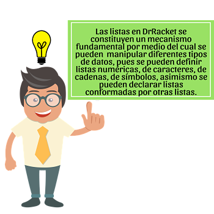
Una lista vacía consiste en un elemento especial que no es un símbolo (un identificador) ni una pareja (estructura de datos conformada por dos campos cabeza y cola), pero sí una lista.
Se trata de un objeto atómico que denota una lista vacía.
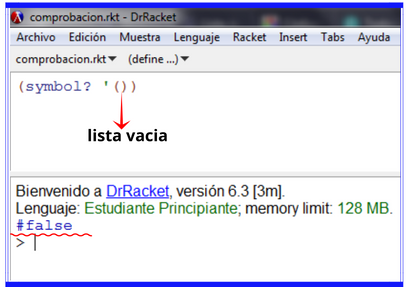
Siguiente
Una lista vacía consiste en un elemento especial que no es un símbolo (un identificador) ni una pareja (estructura de datos conformada por dos campos cabeza y cola), pero sí una lista.
Una lista vacía se puede escribir de diferentes formas en DrRacket como se muestra a continuación:
Implementacion de una Lista vacia en DrRacket
Para definir una lista se debe asignar un nombre y se crea, ya sea vacía o conformada con los elementos que el programador incluya. La expresión para crear una lista tiene la siguiente forma:
Nombre-lista
Hace referecia al nombre que el programador le asigna a la lista según su gusto y conveniencia.
Apóstrofe (') o función quote
Indica que lo que sigue entre paréntesis es una lista de valores literales.
Elementos
Donde los elem1 elem2 elem3…elemn son los componentes de la lista. Cada elemento puede ser un dato de
diferente tipo, ya sea numérico, carácter, cadena, símbolo u otra lista.
Ejemplo1:
Defina una lista con los números pares 2 4 6 y 8.
Solucion:
(define numerosPares '(2 4 6 8))
(display numerosPares)

Defina una lista con el operador cons que contenga el elemento Mercury y una lista vacía. 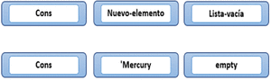
Es importante aclarar que el resto de la lista no siempre es una lista vacía sino que puede ser otra lista con otro elemento definida con el operador cons.
Defina una lista con el operador cons que contenga el elemento Mercury y una lista vacía. 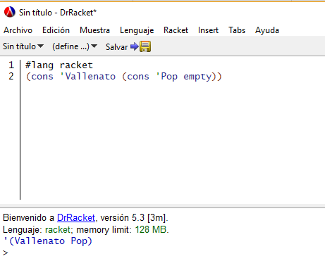
Mira acontinuación, como se puede construir una lista con uno o varios elementos.
- 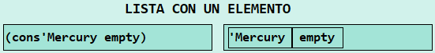
- 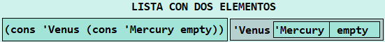
- 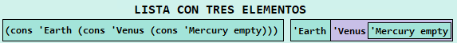
construya una lista que contenga los siguientes elementos: “manzana” , “pera” , “naranja” , “mandarina” , “banano”. Para la definición de la lista utilice la función cons. 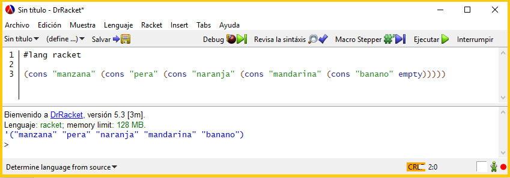
construya una lista que contenga los siguientes elementos: “manzana” , “pera” , “naranja” , “mandarina” , “banano”. Para la definición de la lista utilice la función cons.
Haz clic sobre las pestañas verticales para observar los ejemplos.
- Estructura
- Ejemplo 1
- Ejemplo 2
- Ejemplo 3
PAREJA
La lista '(1 2 3 4) se construye con la siguiente secuencia de parejas:
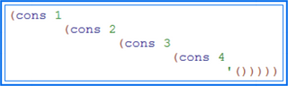
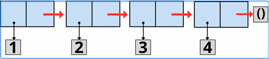Realice la estructura interna de la lista que almacena los múltiplos de 3 menores que 15, utilizando los diagramas de caja y puntero.
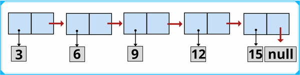Realice la estructura interna de la lista: ‘(0 1 2 3 4 5 6 7 8 9). También defina esta lista en DrRacket utilizando la función cons.
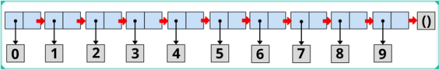 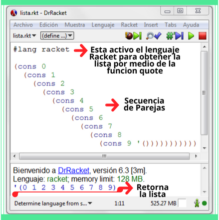 IMPLEMENTACION EN DrRacketHaz clic sobre las pestañas verticales para observar las funciones.
-
Haz clic en los botones ► para observar el video.
-
Definición
La recursividad es el proceso mediante el cual una función puede llamarse a sí misma desde la misma función, de tal manera que se ejecuta una cantidad finita de veces. De acuerdo a esto, una de las partes más pequeñas de la función puede ser la misma función que se esté tratando de implementar.
CASOS BASE
Son aquellos casos que se resuelven sin recursividad, y se constituyen condiciones de parada para que la recursividad no sea infinita. Este tipo de casos debe proporcionar una solución o acercar al programador a ella.
CASOS RECURSIVOS
Son aquellos que siempre deben avanzar hacia un caso base, y son considerados expresiones de forma recursiva.
-
Definiciones Recursivas: Los Números
Ejemplo 1: Calcular el factorial del numero 3 por medio de una funcion recursiva.
El factorial de un número n es la multiplicación de números consecutivos hasta el numero n.
Tip!
Solución Iterativa
Solución Recursiva
n! = 1*2*3*...*(n-1)*nFactorial(n)=Si n=0 n!=1 → Caso Base
Si n>0 n!=n*(n-1)! → Caso RecursivoAnálisis →
Implementación →
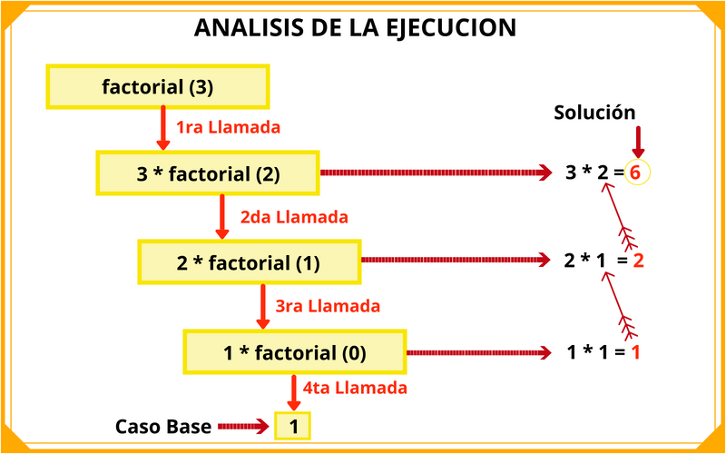 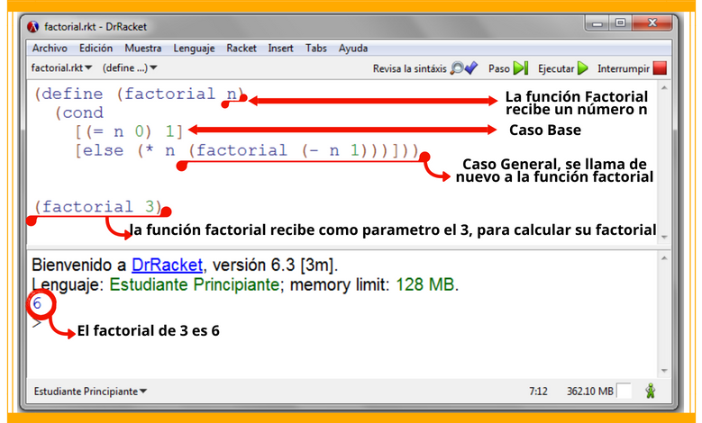 -
Costo de un Inventario
Ejemplo 2: Desarrolle una función suma que calcule el valor de un inventario a partir del costo de los juguetes individuales.
Solución Recursiva
Suma (lista-de-precios) =Si lista-de-precios = empty suma = 0 → Caso Base
(first lista-de-precios) + suma (rest lista-de-precios) → Caso RecursivoAnálisis →
Implementación →
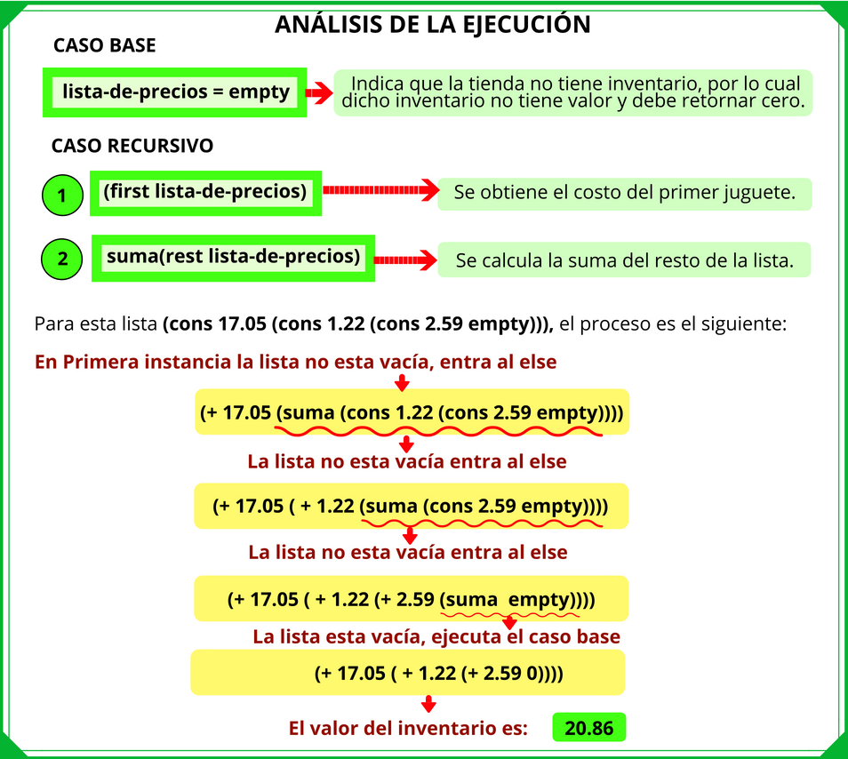 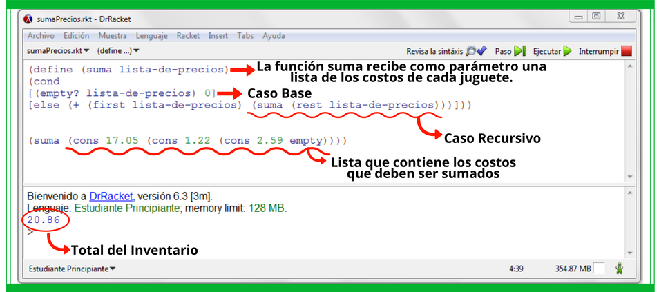 -
Disponibilidad de Juguetes
Ejemplo 3: Determinar si un juguete está disponible. A continuación la solución recursiva:
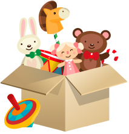contiene-juquete? (lista, juguete) =Si lista = empty contiene-juguete? = false → Caso Base
Si firsElemLista = symbol = juguete contiene-juguete? = true → Caso Base
contiene-juguete? ((rest lista) juguete) → Caso RecursivoImplementación →
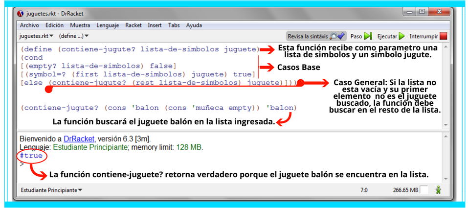